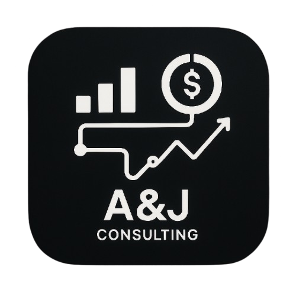

A&J CONSULTING
Business Intelligence Solutions
Transformamos tus datos en decisiones inteligentes
Sistema especializado en gestión clínica con dashboard de KPIs en tiempo real
Nuestra Propuesta de Valor
Dashboard Inteligente
Visualización avanzada de KPIs clínicos con métricas en tiempo real y análisis predictivo.
Seguridad Empresarial
Protección de datos con encriptación bancaria y cumplimiento de normativas de salud.
Análisis Predictivo
IA avanzada para predecir tendencias y optimizar la rentabilidad de tu clínica.
Resultados Comprobados
75%
Reducción en tiempo de análisis
35%
Mejora en identificación de oportunidades
90%
Precisión en detección de patrones
300%
ROI promedio en 6 meses